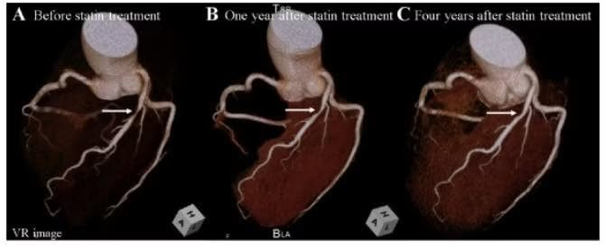

(no text — see the shared post below)
Influencers claim that various unproven interventions can supposedly reverse plaque, and that you shouldn’t take statins.
The reality is that plaque reversal with statins is fairly common when first starting. You can read the many past posts about this by searching the group for the tag #statinreverseHD.
Here is just one case report from the medical literature.
JCCT, May-June 2020
A case of prominent coronary plaque regression with statin therapy:
journalofcardiovascularct.comLink to journalofcardiovascularct.comjournalofcardiovascularct.com
This person experienced massive plaque reversal in the LAD by just taking a low dose statin (10 mg atorvastatin). His blockage went from severe to mild in the LAD after only 4 years on the drug. This was documented on CT-angiography (see photos below).
You can see on the second photo below that the LAD was mostly closed off. Four years later, it was almost fully open again. This guy cleared most of the plaque out of the problematic segment of his LAD by just taking a low dose statin. That’s all he did.
Anyone who tells you that statins can’t reverse plaque is lying to you.
Does this kind of dramatic response happen for everyone who starts on a statin? No, of course not. This guy was extremely responsive. He is an outlier.
But 6 randomized trials have now demonstrated that people who start on statins see reversals of total plaque volume (TAV) anywhere from 5% to 17% on average. This is proven using high-resolution CT-angiography and IVUS (the gold standard): ↪ Six randomized trials show statins reduce total plaque volume 5-17% from baseline.
Quoted:
“Plaque volume (from the first diagonal branch to the septal branch) and mean plaque burden improved from 100 to 38 mm3 and from 66% to 26% (Fig. 2A–C), respectively. In addition, remodeling index (RI) decreased from 1.11 to 0.98 (RI was calculated as the ratio of the outer vessel area at the most stenotic segment divided by the outer vessel at a proximal reference segment), and minimal lumen area (MLA) improved from 2.7 to 7.6 mm2 (Fig. 2D–F).”
Quoted:
“A 69-year-old Japanese male who was a former smoker and had a history of untreated dyslipidemia (LDL cholesterol 143 mg/dl) presented ST segment depression in leads V2-6 on the exercise electrocardiogram (ECG). Severe stenosis of left anterior descending artery (LAD) was confirmed by 320-row multidetector computed tomography angiography (CTA) (Aquilion ONE, Canon Medical Systems, Otawara, Japan) (Fig. 1A, white arrow). Adenosine-induced stress myocardial perfusion scintigraphy did not present signs of LAD myocardial ischemia. The after medications were administered: atorvastatin 10 mg, bisoprolol 2.5 mg, and isosorbide mononitrate 40 mg. CTA was performed one year and four years after statin treatment due to chest discomfort. The LAD stenosis showed improvement on coronary CTA from severe to moderate one year later (Fig. 1B, white arrow). During the four years of follow-up, the LAD stenosis gradually improved and eventually became mild (Fig. 1C, white arrow). LDL cholesterol was monitored and strictly controlled between 52 and 79 mg/dl during the course of follow-up. Systolic blood pressure, HbA1c, HDL cholesterol, triglyceride levels, and body mass index did not show significant differences more than time (from 128 to 126 mmHg, 5.8%–5.8%, 50–54 mg/dl, 64 to 60 mg/dl, and 17.5 to 17.4, respectively).”
Quoted:
“Statin therapy has been shown to reduce coronary plaque volume in patients with coronary artery disease (CAD). In particular, strict control of LDL cholesterol (<70 mg/dl) with statin therapy in Japanese patients tends to reduce more coronary plaque than LDL cholesterol levels (>70 mg/dl) and also in Caucasians.”
#reverseHD #statinreverseHD #statinsHD #atorvastatinHD #influencersHD

